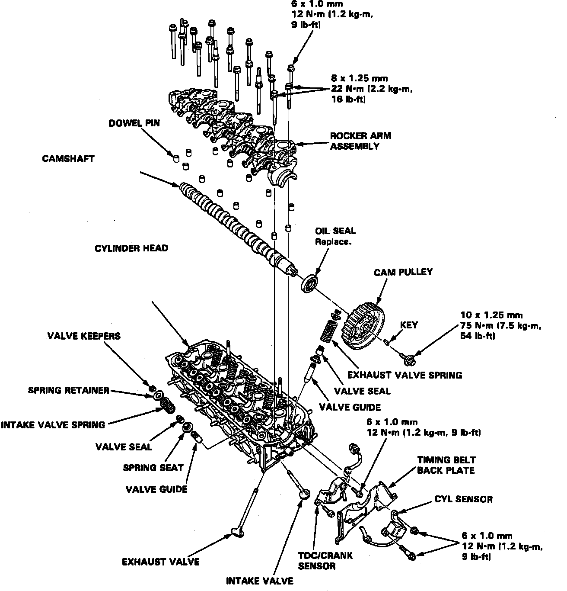
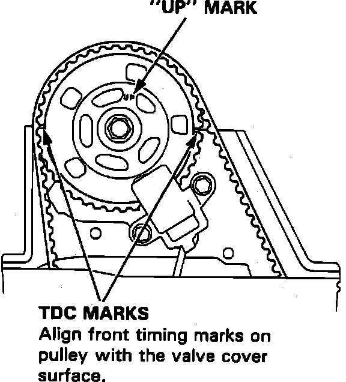
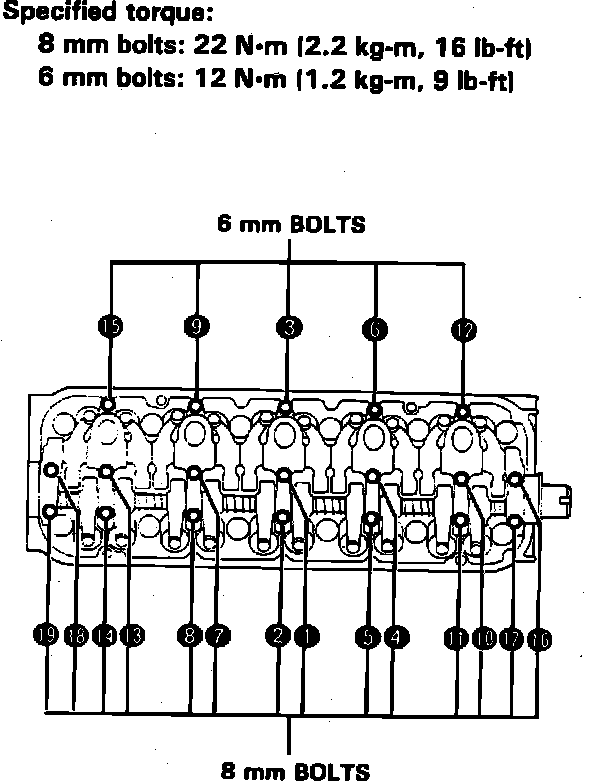

Rocker Arm Assembly: Service and Repair
Fig. 49 Rocker Arm Replacement:

Fig. 50 Camshaft TDC:

Fig. 51 Rocker Arm Tightening Sequence:

1. Remove cylinder head as outlined under Cylinder Head Assembly.
2. On models equipped with radio coded theft protection system, refer to Vehicle Damage Warnings for system disarming and arming procedures. On models equipped with airbag system, refer to Technician Safety Information for system disarming and arming procedures.
3. Refer to Fig. 49, for camshaft and rocker arm replacement.
4. Position cam pulley until ``Up'' mark faces up and front timing marks are aligned with valve cover surface, Fig. 50.
5. Remove CYL sensor.
6. Remove cam pulley attaching bolt, washer pulley and key, then remove back cover.
7. Remove TDC/CRANK sensor.
8. Loosen rocker arm adjusting screws, then remove rocker arm attaching bolts in reverse sequence shown, Fig. 51.
9. Unscrew cam holder bolts two turns at a time in a criss-cross pattern, to prevent valve or rocker arm damage.
10. Do not remove cam holder bolts.
11. Reverse procedure to install, noting the following:
a. Clean cam and journal, then lubricate surfaces.
b. Install camshaft seal with open side (spring) facing inward.
c. Lubricate cam lobes after assembly.
d. Apply liquid gasket to No. 1 and No. 7 cam holder head mating surfaces.
e. Ensure rocker arms are properly positioned on valve stems.
f. Tighten rocker arm bolts two turn at a time in sequence shown, Fig. 51, to specifications.
12. On models equipped with radio coded theft protection system, refer to Vehicle Damage Warnings for system disarming and arming procedures. On models equipped with airbag system, refer to Technician Safety Information for system disarming and arming procedures.